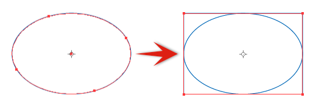

久しぶりにIllustratorをガッツリと使う機会があったので、知っておくとちょっと幸せになれる小技をまとめてみました。使用しているのは、Illustrator CS6（Windowsパッケージ版）ですので、他のバージョンだと動作の異なる場合があるかもしれませんが、ご了承ください。
- 任意の深度へオブジェクトを一発で移動させる
- グループ化されているオブジェクトの一部をコピーしてしまった時の対処方法
- 鎖マークを外したまま比率を保って変形させる
- パスファインダオプションで、パスファインダ適用時の余分なアンカーポイントを削除する
- スマートガイドを使用せずにアンカーポイントを揃える
- 段落設定を応用して使う
- 段落設定で矩形を作成する
- ドキュメントで設定されている単位以外を使う
- 数値入力の四則演算で電卓いらず
- 交差したパスを交差している部分でサクッとつなぐ
1. 任意の深度へオブジェクトを一発で移動させる
「前面／背面へペースト」を実行すると、「現在選択されているオブジェクト」の前面／背面にペーストされます。これを利用して、深度を変更するオブジェクトをカット（またはコピー）し、深度を合わせたいオブジェクトを選択した後、「前面／背面へペースト」を実行しましょう。

グループ化されているオブジェクトへペーストする場合は、ダイレクト選択ツール（白矢印）で選択してやればOKです。さらに、グループ内のオブジェクトの一部を別のグループにペーストしても、問題なくグループ化されます。
2. グループ化されているオブジェクトの一部をコピーしてしまった時の対処方法
グループ化されているオブジェクトの一部を、ドラッグコピーしてしまうことがあるかと思います。これをグループ化解除して、ドラッグコピーしたオブジェクトのみを選択解除して…とグループから取り出すのはちょっと手順が多いですね。
ここで、ドラッグコピーしてしまったオブジェクトを「カット」→「前面／背面へペースト」するとグループから簡単に抜き出すことができます。

3. 鎖マークを外したまま比率を保って変形させる
コントロールパネル（ウィンドウ上部または下部にあるプロパティをまとめて設定するパネル）のサイズの鎖マークがオフの状態でも、OSXならcommand、Windowsならctrlキーを押しながら値を決定すると、比率を保ったまま変更ができます。

鎖マークをオフにしておけば、キー1つでどちらにも対応できるので便利ですね！
4. パスファインダオプションで、パスファインダ適用時の余分なアンカーポイントを削除する
ここで言うまでもないのですが、「パスファインダオプション」の「余計なポイント削除」にチェックを入れておくと、適用後に不要なアンカーポイントが削除された状態になります。

5. スマートガイドを使用せずにアンカーポイントを揃える
スマートガイドを使用してる場合、周りにスナップするポイントが多くあると、なかなか思った通りのところにスナップしづらくなります。
まずは、オブジェクト同士をアンカーポイントのスナップで揃えます。ここで移動ツールを呼び出すと、先ほど移動させた距離が入力されているので、水平または垂直の方向に移動させれば、本来移動させたい場所に戻すことができます。

こんな古典的なやり方もあるよということで。
6. 段落設定を応用して使う
名の通り段落を作成する機能ですが、タイルを作成したり、レイアウトグリッドを作成したり、枠を等分したりといろいろ使い勝手のいい機能です。下の画像は16×16のグリッドを作成したものです。

特定の幅を任意の個数で均等に分割する場合でも、わざわざ計算することなく簡単に分割できます。
7. 段落設定で矩形を作成する
曲線がある単一オブジェクトや複数のオブジェクトを囲う矩形を作成する場合も、段落設定を適用すると選択されているオブジェクトのサイズで矩形が作成されます。

ただし、一部のオブジェクト（配置した画像など）が含まれているとうまく行かないのと、選択されているオブジェクトが矩形になるので、元のオブジェクトが必要ならコピペしてから実行してください。
ちなみに、まだ角丸フィルタが再編集できないころに、オブジェクトを元の矩形に戻す方法として使ってました。
8. ドキュメントで設定されている単位以外を使う
移動やサイズの値を入力する際に、単位まで入力するとドキュメントのデフォルト単位に計算し直してくれます。文字を行間pt分移動させたいとか、使えるところは少ないですが、覚えておくと便利です。

9. 数値入力の四則演算で電卓いらず
これは結構有名ですが、コントロールパネルや移動ツールなどの値を入力するところでは、四則演算を使うことができます。さっき移動した半分の距離を移動させたいとか、もう20mm移動させたいとか細かいところで便利です。

10. 交差したパスを交差している部分でサクッとつなぐ
交差したパスをつなぎ、パスファインダで合体しましょう。直線はもちろん、曲線でも下手にパスを編集せずつなぐことができます。

パスの状態によっては、余計なアンカーポイントができてしまう場合があります。その時は、オブジェクトの外を回避するようにつないでしまいましょう。

番外編
イラレのtipではないのですが、ウェブをやっているとptって単位に慣れないと思います。文字サイズや線幅などに使われていますが、3ptは約1mm（もう少し細かく言うと1.05mmぐらい）と覚えておけば、サイズ感がわかりやすいかもしれません。
いかがでしたでしょうか。割と細かいのが多いですが、1つでも発見があれば幸いです。間違いなどありましたら、Twitterまでお知らせください。